How to run the site: games, words, homework and admins.
Site: yehudakogan770.github.io/Alephreview
Admin page: the Admin button at the top right of the site
Aleph Review is a website of Hebrew reading games for students. The games are sorted like karate belts:
Students play without signing in. They only sign in with Google to see homework.
Admins (teachers) change everything on the admin page: games, words, the home page, homework and other admins. Nothing needs code.
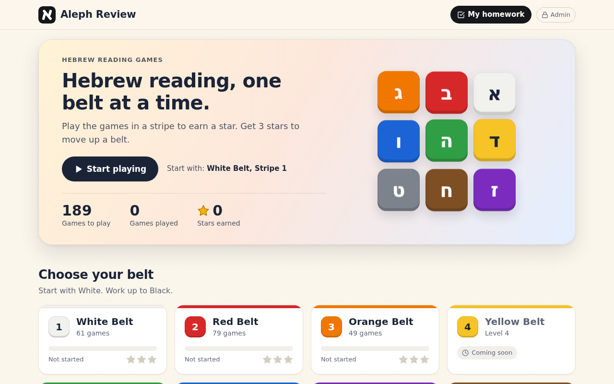
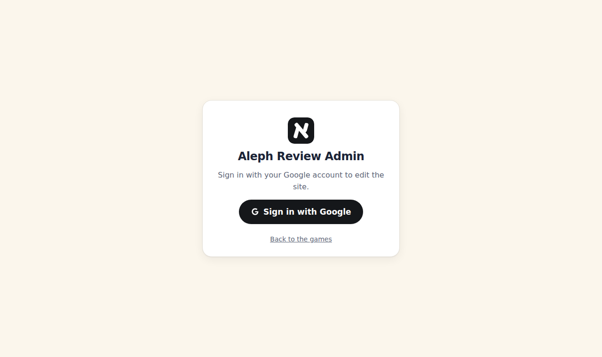
| Full admins | Can do everything, including adding and removing sub-admins. The list of full admins is kept in the Firebase security rules (Firebase console), not on the admin page. |
|---|---|
| Sub-admins | Can do everything on the admin page (games, words, homework, publishing) except manage admins. Full admins add them on the Admins tab. |
To sign out, click Sign out at the top right of the admin page.
Changes to games, words, How to play and the home page are a draft first. Students don't see them until you publish.
| Status (next to the logo) | Everything is published: students see what you see. Unsaved changes: you changed something that isn't live yet. |
|---|---|
| Preview | Opens the student site with your changes, so you can check them before students see them. |
| Undo all changes | Throws away every change since the last publish. |
| Save & publish | Makes your changes live for everyone. Students see them after they reload the page. |
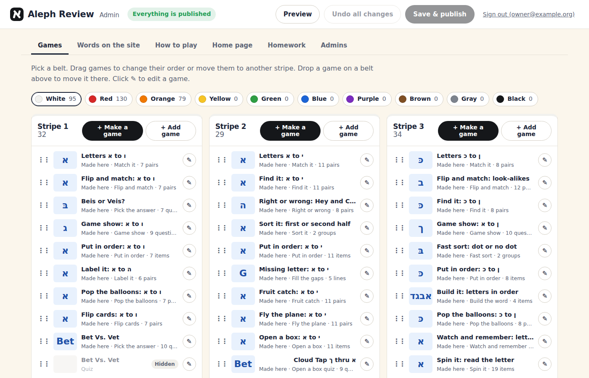
Click ✎ on a game. For a game made here you can change its name, theme, content, instruction, belt and stripe. You can also:
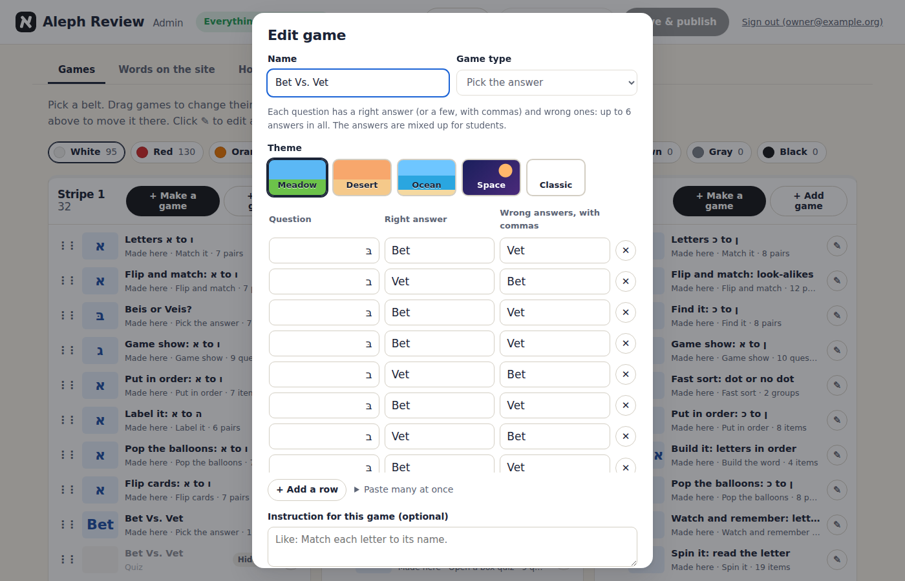
Remember: after changing games, click Save & publish.
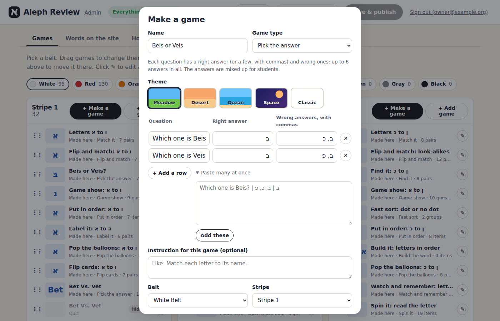
Alef = (the letter) or (letter) | AlefWhich one is Beis? | (right answer) | (wrong), (wrong)Beis | (item), (item), (item)(letter) (letter) [(letter)] (letter)
Games with more rows than one round holds are split into even rounds by themselves.
Every type below is made on this site, so it knows the score. All of them can be homework except the four marked *, which have no right or wrong answers.
| Type | Like Wordwall's | What you type in |
|---|---|---|
| Match it | Match up | Pairs: a tile, and the word it goes next to. |
| Flip and match | Matching pairs | Pairs, played as face-down cards. |
| Find it | Find the match | Pairs: students see the word and tap its tile. |
| Right or wrong | True or false | Pairs (the site mixes some up), or rows with yes/no. |
| Pick the answer | Quiz | Questions: question | right answer(s) | wrong answers. |
| Game show | Gameshow quiz | Questions, with a clock and two helps (50:50, Second try). |
| Win or lose | Win or lose quiz | Questions; students pick points before each one. |
| Sort it | Group sort | 2 to 4 groups: group name | items. |
| Fast sort | Speed sorting | 2 groups; tiles come one at a time. |
| Sort the table | Categorize | Groups shown as columns, checked with Submit. |
| Put in order | Rank order | A list, typed in the right order. |
| Build the word | Anagram | Words; the letters keep their vowels. |
| Fill the gaps | Complete the sentence | Lines with [ ] around the missing parts. |
| Label it | Labelled diagram | Pairs: a big part on a board, and its label. |
| Pop the balloons | Balloon pop | Pairs: the tile on the balloon, the word on its cart. |
| Fruit catch | Flying fruit | Pairs or questions: what to find. |
| Whack it | Whack-a-mole | Pairs, or groups (hit the first group only). |
| Fly the plane | Airplane | Pairs or questions: fly into the right cloud. |
| Watch and remember | Watch and memorize | Tiles to remember (at least 8). |
| Spin and answer | Spin the wheel (quiz) | Questions: the wheel picks one. |
| Open a box quiz | Open the box (quiz) | Questions: one in each box. |
| Spin it * | Spin the wheel | What's on the wheel. |
| Open a box * | Open the box | What's in the boxes. |
| Flip cards * | Flash cards | Front and back of each card. |
| Pick a card * | Speaking cards | The cards in the deck. |
Every game made here has a Start screen, a clock, a sound button (sound on/off), a score at the end, Try again and Show answers. Some games also read aloud with the computer's voice; the sound button turns that off too.
The site first used games from Wordwall. Every Wordwall game has been copied into a game made here, with the same title, words and answers, in the same place. The Wordwall versions are hidden (still on the admin page, marked Hidden).
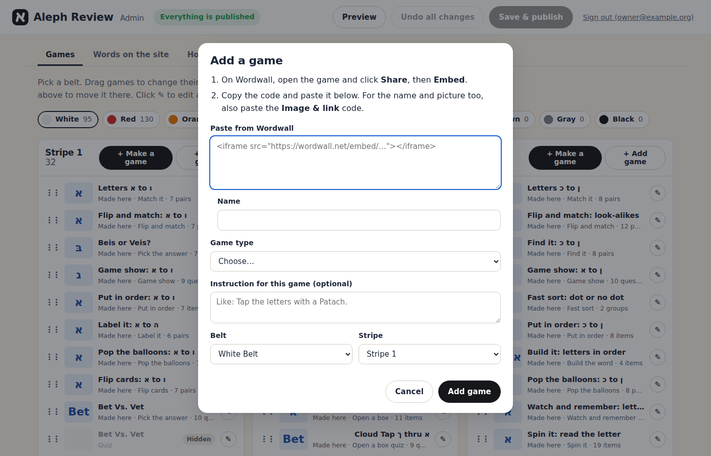
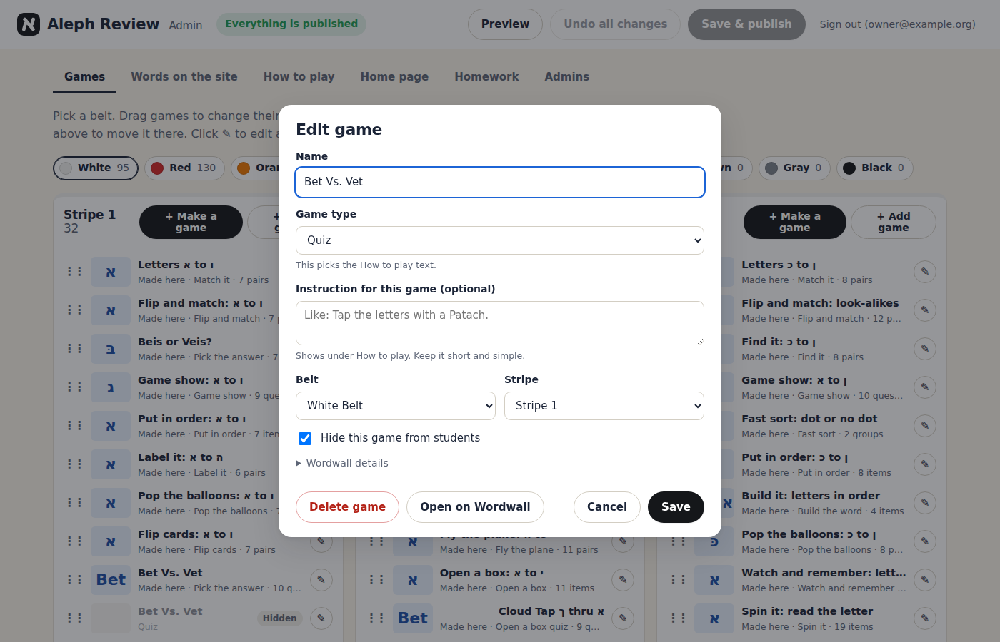
Every word students see can be changed here: the home page, belts and stripes, How to play, the stripe-done message, homework, the words inside games, and the footer.
**Start**.{n} or {belt}, are filled in by the site. Keep them.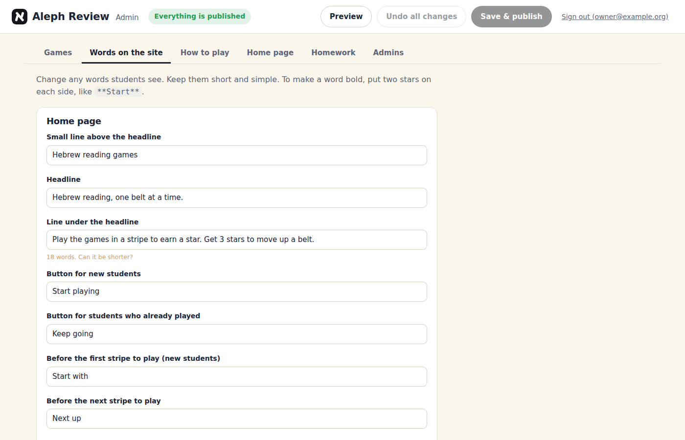
Each game page has a How to play box with 3 steps. Step 2 comes from the game's type and is set here, one line per game type. A game's own Instruction (set when editing the game) is added under it.
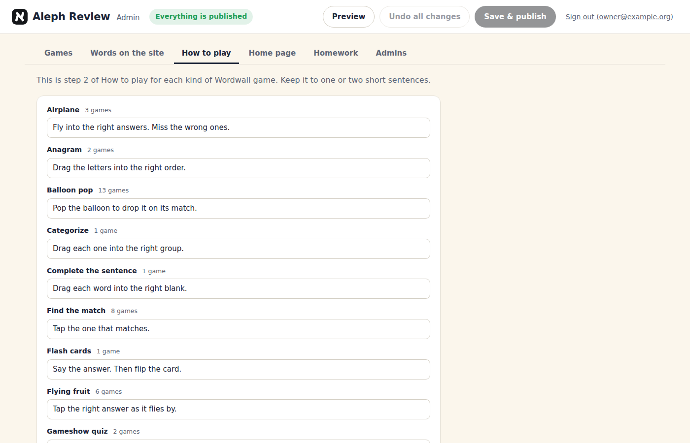
Choose what shows on the home page:
To change the home page's words (headline, buttons), use Words on the site.
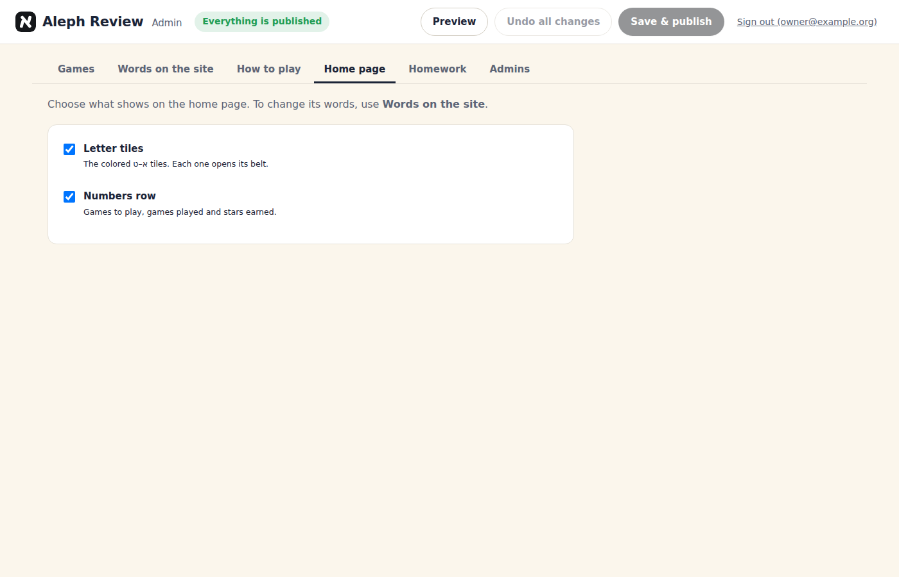
Give a class games to do at home and see who passed. Homework uses only games made on this site (not Wordwall games, and not the four card games with no score).
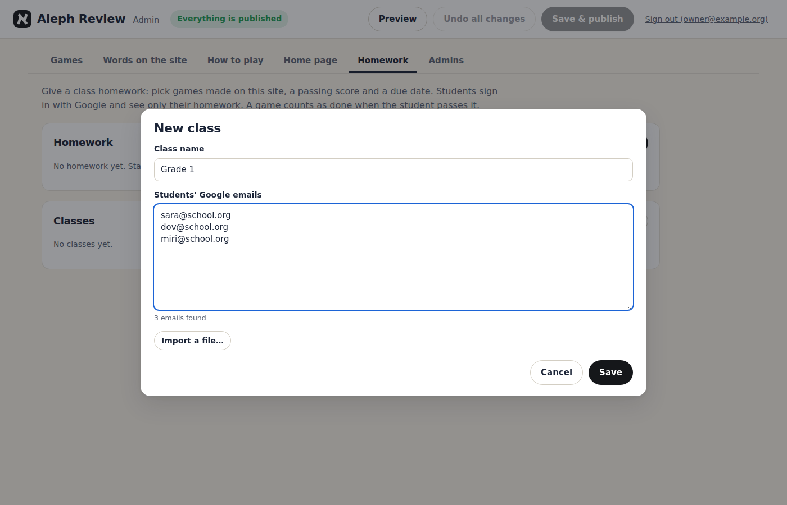
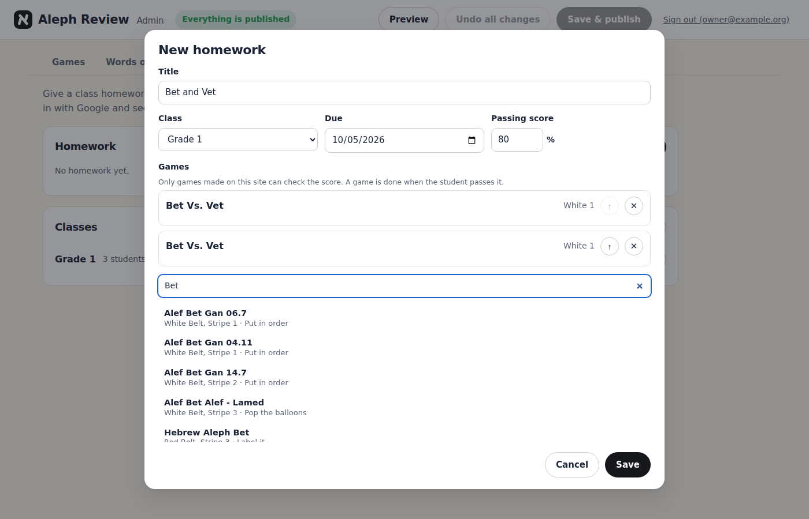
A game counts as done only when the student reaches the passing score. They can try again as many times as they like.
On the Homework tab, click Who did it next to a homework.
| What you see | Meaning |
|---|---|
| ✓ 100% | Passed, with their best score, the number of tries and the time spent. |
| ✗ 60% | Played but not passed yet (their best score so far). |
| Opened | Opened the game but didn't finish it. |
| — | Not opened yet. |
| Passed 2/2 | How many of the games they passed. |
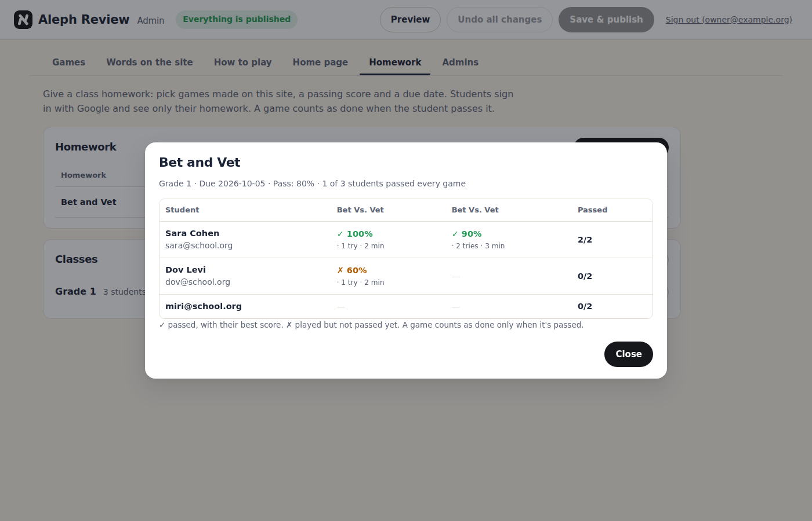
To change or delete a homework or a class, click Edit next to it.
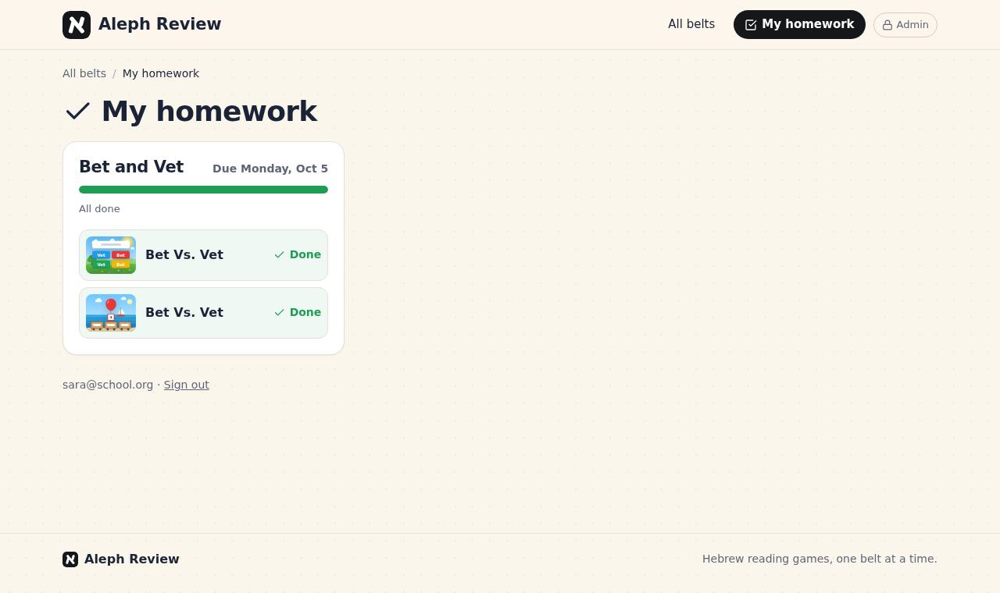
Playing games never needs sign-in. Only homework does.
Only full admins see this tab.
Changes on this tab save right away.
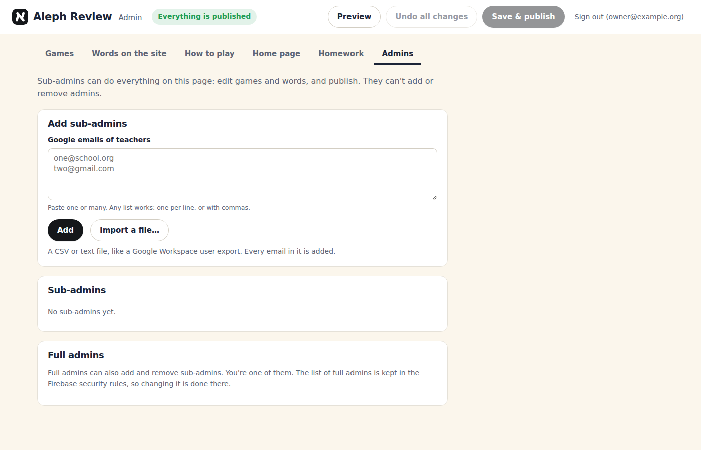
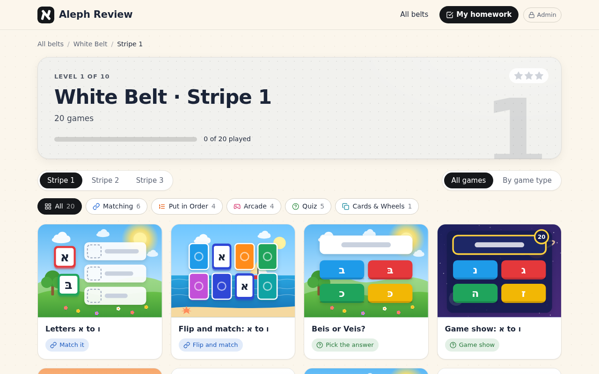
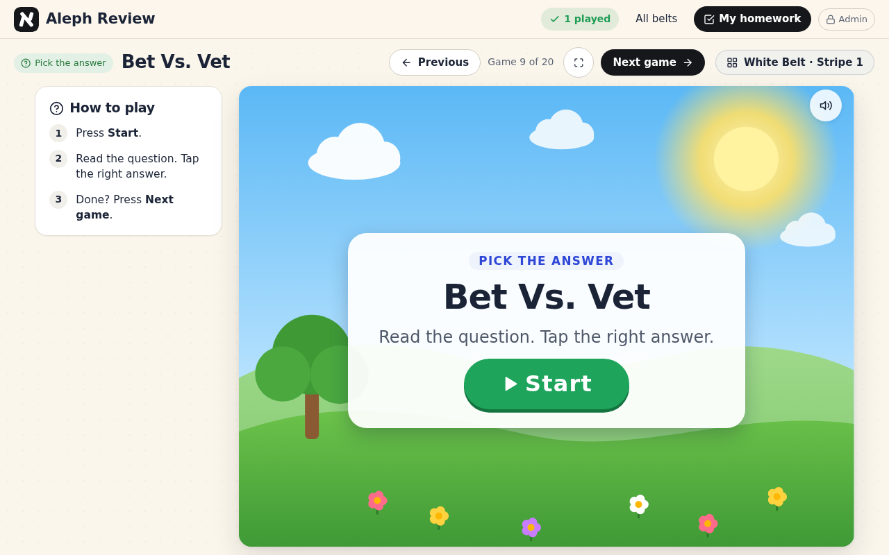
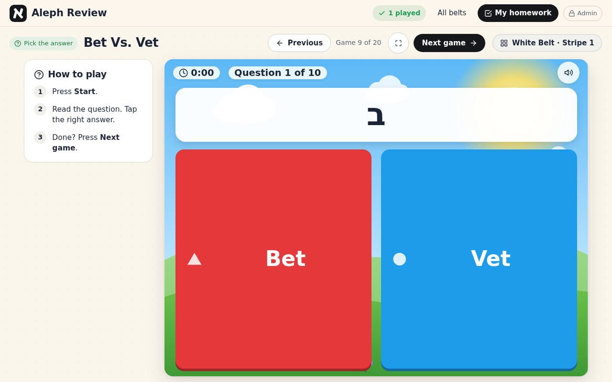
| If… | Do this |
|---|---|
| Students don't see my change | Click Save & publish. Then reload the site (on a computer: Ctrl + Shift + R). |
| + Make a game does nothing | Reload the admin page (Ctrl + Shift + R). If it asks to keep your unpublished changes, either answer works. |
| I made a mistake and want to start over | Click Undo all changes (only for changes not yet published). |
| I want to check before students see it | Click Preview. |
| A game should be gone for a while | Edit it and tick Hide this game from students (you can show it again later). Delete only if you won't need it. |
| A student can't see homework | Check their email is in the class exactly, and that they signed in with that account. |
| A game can't be picked for homework | Only games made on this site with a score can be homework. Copy the game as a game made here. |
| "Played" number looks wrong | It counts games opened in that browser on that computer. It's not the same on other computers. |
| A game reads aloud and I don't want it | Students can press the game's sound button. To stop it for everyone, ask for the game's reading aloud to be turned off. |
| The admin page says I'm not an admin | Click Use a different account and pick your school account, or ask a full admin to add you. |